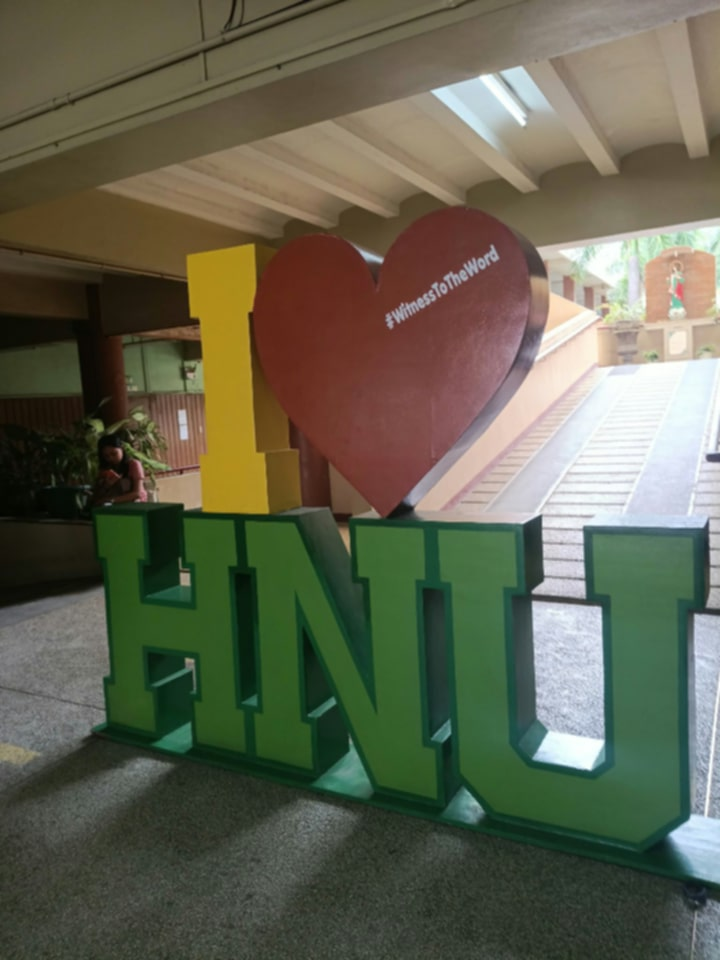
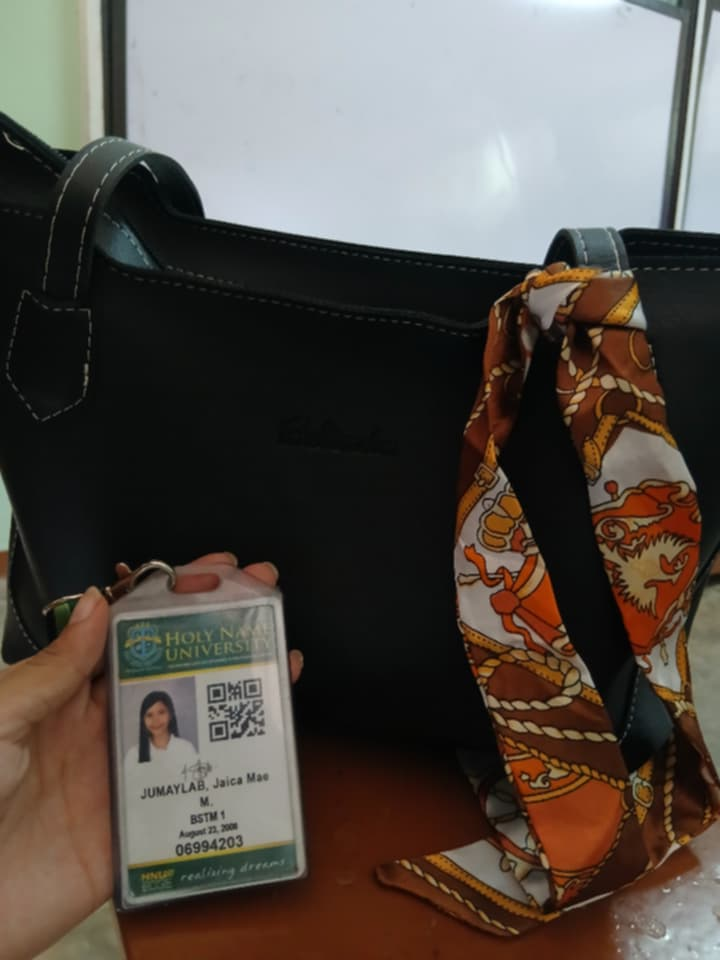
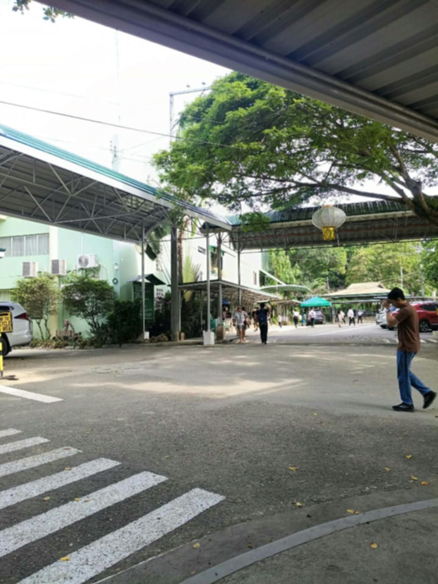
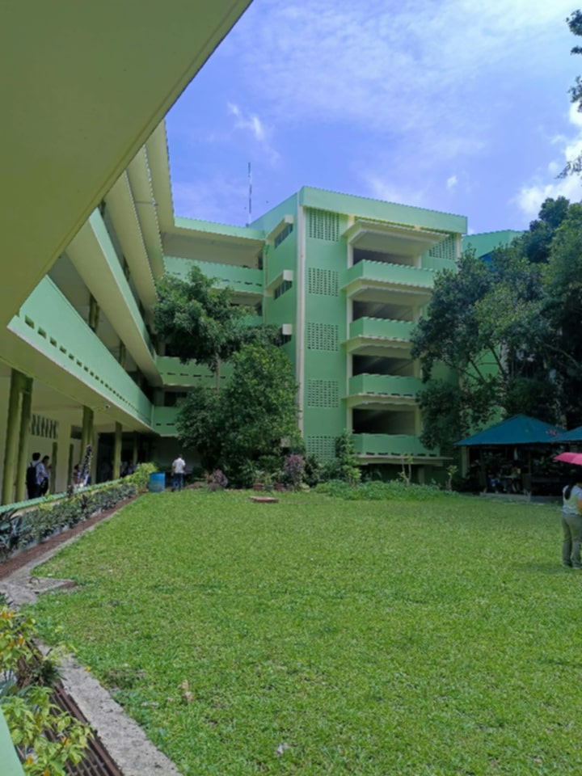
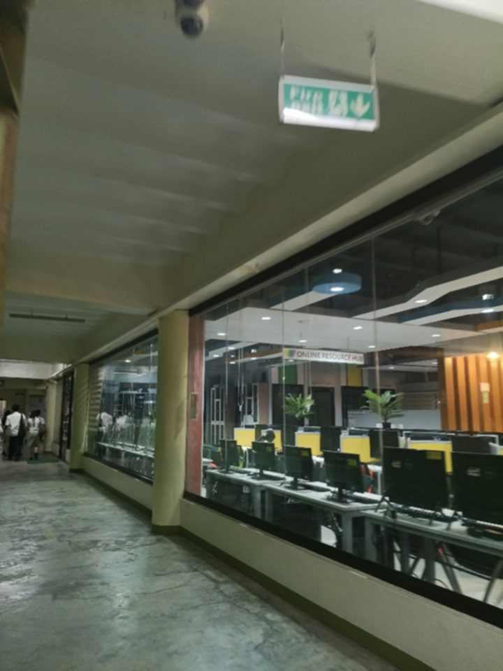
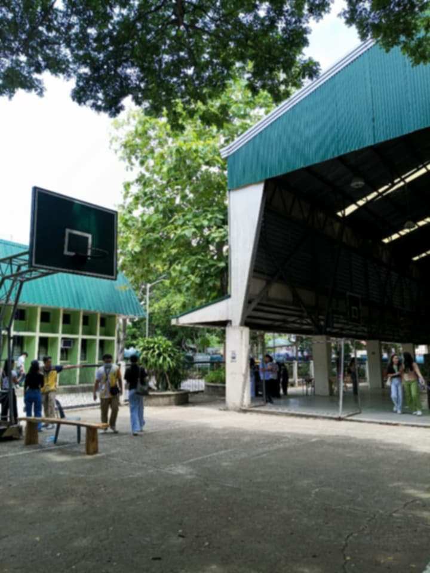
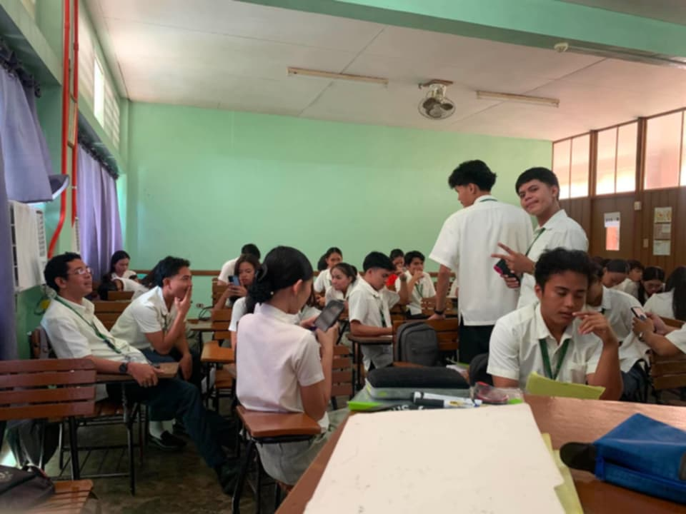
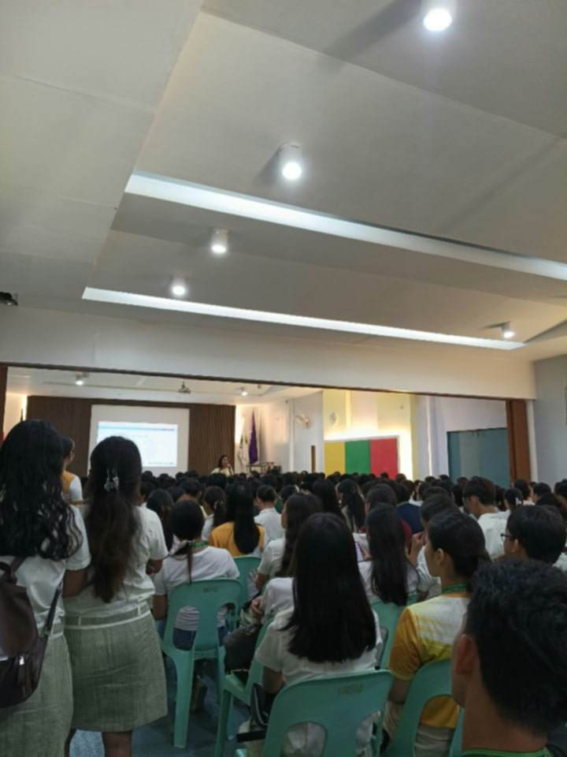
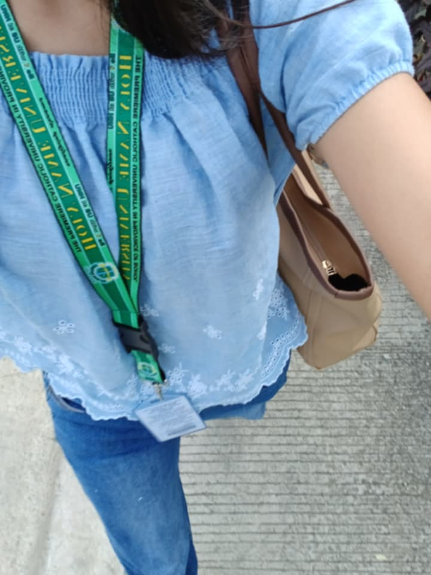

Notes from my very first week as a college student, from the nervous night before to the first bell at Holy Name University.
Name: Jaica Mae M. Jumaylab Program: BS Tourism Management 1 School: Holy Name University, Tagbilaran City A.Y.: 2026-2027

Day one, let's go!
My first day, in three posts
JUNE072026

Everything ready by 9 PM
First Day
The Night Before: Nerves, a Pressed Uniform and No Sleep
By Jaica Mae M. Jumaylab | Tagbilaran City | 3 min read
I ironed my uniform twice. I packed my bag, unpacked it, and packed it again. Tomorrow I would walk into college for the first time, and my brain kept asking the same questions: Will I find my room? Will anyone talk to me? Am I really ready to study tourism?
Being nervous only means it matters to me.
My mother left a note in my lunchbox that said, "Smile, you are a Holy Namer now." I read it at midnight and finally felt calm enough to try sleeping.
Prepare your uniform, ID and bag the night before
Check your schedule and room number
Plan your commute and leave early
JUNE082026

First step on campus
Campus Life
Walking Into Holy Name University for the First Time
By Jaica Mae M. Jumaylab | Holy Name University | 4 min read
The campus felt bigger than it did on enrollment day. Students were everywhere, some laughing in groups and some staring at their schedules like me. I got lost twice before a friendly upperclassman pointed me to my building, and I made a mental note to be that kind to the next freshman I meet.
Orientation reminded us that college is different from high school. We manage our own time, we read before class, and we are expected to speak up. It sounded scary, but also exciting.
Walk your route to class before the first day if you can
Ask for directions, everyone was once a freshman
Bring water, a pen and a small notebook



JUNE082026

BSTM 1, meet my new family
Classmates
My First Class and the People Who Made It Easier
By Jaica Mae M. Jumaylab | BSTM 1 | 3 min read
Our first subject was Introduction to Tourism. The professor did not start with a lecture. She asked each of us to say our name and our favorite place in Bohol. Hearing about Panglao beaches, Loboc, the tarsiers and everyone's hometowns made the room feel warm right away.
By lunch I had a seatmate, a group chat and three new friends who were just as lost as I was. That is when it hit me: the first day was never meant to be perfect. It was only meant to begin.
I came in nervous. I left with friends.

Reader notes
Pagtarong sa imong skwela, suporta rami nimo kanunay!Ate Renalyn
Kaya rana nmo our youngest sister!Kuya John Mark
Proud of you, future tourism professional!Mama

About me
Hi! I'm Jaica Mae M. Jumaylab, a first-year BS Tourism Management student at Holy Name University. This blog is my college diary, starting with the day everything began.